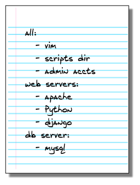

You'll learn how to:
Estimated time: 15 minutes
Difficulty:
Let's review what we've learned so far:
Notice how the Formula we created in the previous section did not contain any information about the Salt Minions that should receive the configuration? Salt Formulas are generic by design, and describe only how a configuration should be achieved.
In this section we'll learn about a different file, called the Top file, that describes where Formulas should be applied.
Individual Formulas and the Top file work together to create the core of SaltStack's configuration management capability.
The Top file is used to automatically apply multiple Formulas to your Salt Minions. The Formulas that are applied to each system are determined by the targets that are specified in the Top file.
Before we create a Top file, it might be useful to take a moment to think about what what your system configurations look like. Consider the different types of systems you set up, and what is common and unique about each. Each system can receive multiple configurations, so start with the most general configurations and work your way down to the specifics.
For example, you might start with a simple description similar to the following:
In the SaltStack paradigm, the list itself would be the Top file, and each item on the list would be a Formula. Targets are used within the Top file to define which Formulas are applied to each Salt Minion.
The following example shows how our configurations might be translated to YAML and represented in a Top file:
When the Top file is executed, Salt Minions execute all Formulas that are defined for any target that they match. For example, a system with a Minion ID of atl-web4-prod would apply the vim, scripts, users, apache, python, and django Formulas.
Now that we understand the purpose of the Top file, lets go ahead and create one. If you are using the Vagrant demo files you'll notice that there is already a top.sls file in the saltstack/salt folder, so we'll just update that one. Otherwise you can create a new file. Add the following to your top.sls file:
base:
'*':
- common
'minion1':
- nettools
Hopefully it is clear to you what will happen when this is applied, so let's try it. On your Salt Master, run the following command to apply the Top file:
salt minion2 state.apply #state.apply is new in 2015.2, so if you are using an earlier version call state.highstate instead.
As you expected, minion1 and minion2 both applied the common Formula, and minion2 also applied the nettools Formula.
Using what you know about the targeting system, you now know how to create Formulas and run them on the correct Salt Minions using the Top file.